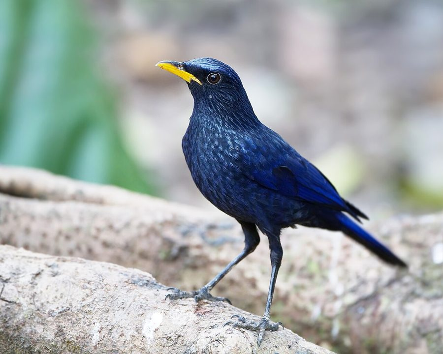

कसियूराBlue Whistling Thrush
Myophonus caeruleus · Muscicapidae · BRD-0356

- Scientific name वैज्ञानिक नाम
- Myophonus caeruleus (Scopoli, 1786)
- Family कुल
- Muscicapidae
- Hindi हिंदी
- कसियूरा
- Local names स्थानीय नाम
- kasiura, blue whistling thrush
- Status here यहाँ की स्थिति
- native
- Movement आवागमन
- Winter visitor
- Known from कहाँ दर्ज
- Others have published records from the wider Awadh–Purvanchal plain, none yet from Basti–Ayodhya अवध–पूर्वांचल से दूसरों के प्रकाशित अभिलेख, बस्ती–अयोध्या से अभी नहीं
- IUCN IUCN
- LC
- Review समीक्षा
- not yet reviewed
When to look कब देखें
Winter visitor शीतकालीन प्रवासी. Expected mainly in January, February, March, October, November, December. मुख्यतः जनवरी, फ़रवरी, मार्च, अक्टूबर, नवंबर, दिसंबर में अपेक्षित।
Breeds along Himalayan mountain torrents from April to August; GBIF records in Uttar Pradesh fall between October and March. All migrants and visitors →
Tell it apart from इनसे अलग पहचानें
कसियूरा / Blue Whistling Thrush
Myophonus caeruleus (Scopoli, 1786) — Muscicapidae
कसियूरा — हिमालय की तेज बहती नदियों और सर्दियों में तराई के नालों का एक बड़ा, गहरा नीला पक्षी। बेकर (1924) के अनुसार इसका शरीर चमकीले नीले धब्बों वाला गहरा नीला-काला होता है और इसकी चोंच पीली होती है। इसकी आवाज सीटी जैसी बहुत मीठी और गूंजने वाली होती है। यह नालों और नम झाड़ीदार जंगल में पत्तों और काई को पलटकर भोजन तलाशता है।
Quick Identification त्वरित पहचान
| Feature | Description | |
|---|---|---|
| Habit | Large, robust riparian thrush frequenting rushing rocky torrents and shaded forest nullahs | |
| Size | Very large thrush, substantially bigger than a [[blue_rock_thrush | Blue Rock Thrush]] |
| Plumage | Deep blue-black plumage, each feather tipped with a glistening metallic blue spot (Baker 1924, p. 180) | |
| Bill | Heavy yellow bill with blackish culmen and base of upper mandible (Baker 1924, p. 180) | |
| Wings | Deep blue wings with bold white tips to median coverts (Baker 1924, p. 180) | |
| Soft Parts | Iris brown or black; bill yellow with dark ridge; legs and feet black (Baker 1924, p. 180) |
Field tip: Look for a large deep blue-black bird with bright yellow bill and glistening blue spots along shady forest streams (Baker 1924).
हिंदी:
इसका शरीर चमकदार नीली बूंदों वाला गहरा नीला-काला होता है और चोंच पीली होती है; यह पत्थरों वाले नालों के किनारे बैठती है (बेकर 1924)।
Morphology आकारिकी
Measurements as given by Baker (1924):
| Measurement | Range |
|---|---|
| Biometrics | Wing 168 to 180 mm. ; tarsus 50 mm. ; culmen 28 to 30 mm. (Baker 1924 as Myiophoneus temminckii temminckii) |
The Blue Whistling Thrush is a powerful, long-legged riparian songbird. Stuart Baker (1924, p. 180) described the plumage: "Lores, chin and upper throat black ; forehead bright deep blue ; whole head, back, wing-coverts, breast and flanks deep blue-black, each feather with a terminal spot of glistening blue ; the spots on the head, neck and throat elongate and gradually widening to broad, circular drops on lower breast and back ; tail deep prussian blue ; wings deep blue, the median coverts with bold white tips ; abdomen, vent and under tail-coverts blackish brown."
The bill is bright yellow with the culmen and base of the upper mandible blackish; legs and feet are black; iris brown or black (Baker 1924, p. 180). Young birds resemble adults but are duller and lack the glistening metallic spots (Baker 1924, p. 180).
हिंदी:
बेकर (1924) के अनुसार इसका पंख 168 से 180 मिमी, टार्सस 50 मिमी और कल्मेन 28 से 30 मिमी होता है। इसके पंखों पर चमकदार नीले बिंदु होते हैं और चोंच पीली होती है।
Behaviour & Ecology व्यवहार और पारिस्थितिकी
Stuart Baker (1924, p. 181) noted: "An extremely common bird throughout the greater part of its range this fine Thrush is found on every stream, flitting hither and thither up and down them and constantly uttering its loud, sweet notes so like the human whistle, but much clearer and more resonant."
Baker (1924, p. 181) described its foraging: "They feed both on the streams and in wet bush-forest, working the leaves and moss just like our English Thrush, turning them over and then listening with head on one side for the movements of a hoped-for worm or other prey."
Stuart Baker (1924, p. 181) recorded its alarm note: "Their alarm-note is like that of the Blackbird and when disturbed they fly far and fast."
हिंदी:
बेकर (1924) के अनुसार यह नदियों और नालों के किनारे पत्तों और काई को पलटकर कीड़े और केंचुए तलाशती है। इसकी सीटी जैसी आवाज बहुत गूंजने वाली होती है तथा खतरे के समय यह बहुत दूर और तेज उड़ती है।
Life Cycle / Phenology जीवन चक्र
This bird does not breed on the Gangetic plain. GBIF records in Uttar Pradesh fall between October and March.
On its mountain breeding grounds, Stuart Baker (1924, p. 181) recorded that it breeds from April to August, building a nest "among boulders or roots on the bank, under an overhanging clod of earth, in or under some stump of dead tree, high up in rock or cliff or actually in the stream itself. A very favourite position is under a waterfall".
हिंदी:
यह मैदानों में प्रजनन नहीं करती; उत्तर प्रदेश में जीबीआईएफ के रिकॉर्ड अक्टूबर से मार्च के हैं। पहाड़ों में यह अप्रैल से अगस्त में चट्टानों, पेड़ों के ठूंठ या झरने के नीचे घोंसला बनाती है।
Host Plants or Prey आहार
No source opened for this atlas lists the food of this bird.
हिंदी:
इस एटलस के लिए खोले गए किसी भी स्रोत में इस पक्षी के विशिष्ट भोजन की सूची नहीं है।
Predators / Natural Enemies शत्रु
No source opened for this atlas names a specific predator of this bird.
हिंदी:
इस एटलस के लिए खोले गए किसी भी स्रोत में इस पक्षी के किसी विशिष्ट शिकारी का नाम नहीं है।
Agricultural / Human Relevance कृषि प्रासंगिकता
No source opened for this atlas describes this bird's dealings with people. Protected under the Wildlife (Protection) Act, 1972.
हिंदी:
इस एटलस के लिए खोले गए किसी भी स्रोत में लोगों के साथ इस पक्षी के व्यवहार या संबंधों का विवरण नहीं है। यह वन्यजीव (संरक्षण) अधिनियम, 1972 के तहत संरक्षित है।
Expected Locally स्थानीय रूप से अपेक्षित
Not a field record. Written from published accounts for eastern Uttar Pradesh. No confirmed local sighting yet — if you have seen it, that is what the atlas needs.
अभी तक स्थानीय पुष्टि नहीं। यह विवरण प्रकाशित स्रोतों से है, किसी अवलोकन से नहीं।
GBIF holds published records from the wider Awadh–Purvanchal plain, none yet from Basti–Ayodhya.
In Uttar Pradesh, published winter records are known from Lakhimpur Kheri (seven records), Shravasti (two records), and Lucknow (one record), reported by fourteen observers between 2016 and 2025 during the winter months of October to March.
A first record would be a photograph of the bird with place and date, sent through the About page.
Distribution वितरण
Stuart Baker (1924, p. 180) recorded the breeding distribution: "Himalayas from the Afghan frontier to the extreme East of Assam, North and South of the Brahmaputra, Chin Hills, Arakan and the Kachin Hills between the Chindwin and the Irrawaddy."
In Uttar Pradesh, published winter records in GBIF are from Lakhimpur Kheri (seven records), Shravasti (two records), and Lucknow (one record), gathered between 2016 and 2025 during October to March.
हिंदी:
बेकर (1924) के अनुसार इसका मुख्य निवास अफगानिस्तान से असम तक का हिमालय है। उत्तर प्रदेश में जीबीआईएफ के रिकॉर्ड लखीमपुर खीरी, श्रावस्ती और लखनऊ से हैं।
Research Questions शोध प्रश्न
- What micro-habitat features along Terai forest nullahs determine the winter settlement of Blue Whistling Thrushes? / तराई के वन नालों में किन विशेषताओं के कारण यह पक्षी सर्दियों में वहां टिकता है?
- To what degree do wintering thrushes show fidelity to identical shaded stream banks across successive winter seasons? / क्या शीतकालीन प्रवास के दौरान यह पक्षी हर साल एक ही नाले पर लौटता है?
- What is the minimum forest canopy cover required along irrigation canals for this species during plains passage?
- How do territorial whistle calls function during winter residency away from mountain breeding grounds?
- Can citizen observers map the winter departure dates along foothill streams in Shravasti? (Local birders can record final spring sightings along forest ravines in March.)
Similar Species मिलती-जुलती प्रजातियाँ
| Species | How to tell apart | हिंदी | |
|---|---|---|---|
| [[blue_rock_thrush | Blue Rock Thrush]] (Monticola solitarius) | Much smaller size, dull slaty-blue plumage without glistening spangles, dark blackish bill, and rocky habitat | ब्लू रॉक थ्रश |
| [[blue_capped_rock_thrush | Blue-capped Rock Thrush]] (Monticola cinclorhynchus) | Distinct white wing patch, bright blue crown and throat contrasting with chestnut-orange underparts | ब्लू-कैप्ड रॉक थ्रश |
Field rule: The very large size, deep blue-black plumage with glistening blue spots, bright yellow bill, and torrent-haunting habits immediately identify the Blue Whistling Thrush (Baker 1924).
हिंदी:
ब्लू रॉक थ्रश छोटी होती है और उसकी चोंच काली होती है; कसियूरा बहुत बड़ा होता है, इसकी चोंच पीली होती है और शरीर पर चमकीले नीले बिंदु होते हैं।
Taxonomy & Classification वर्गीकरण
Original description. Described by Giovanni Antonio Scopoli in 1786 in Deliciae Florae et Faunae Insubricae (pt. 2, p. 88, pl. 49), under the basionym Gracula caerulea. The type locality is China.
Synonyms and historical names. Nicholas Aylward Vigors described Himalayan birds in 1831 (P.Z.S. p. 171) as Myiophoneus temminckii. Stuart Baker (1924, p. 180) and Blanford and Oates used Myiophoneus temminckii. Modern authorities merge these forms under Myophonus caeruleus.
Subspecies. Stuart Baker (1924, pp. 180–182) treated Himalayan birds as Myiophoneus temminckii temminckii, today recognized as the subspecies Myophonus caeruleus temminckii (Vigors, 1831).
Family and order placement. Order Passeriformes, family Muscicapidae (thrushes and Old World flycatchers), genus Myophonus.
IUCN status rationale. Evaluated as Least Concern (LC) by the IUCN Red List (BirdLife International 2016).
हिंदी:
स्कोपोली ने 1786 में इसका वर्णन किया था। विगोर्स ने हिमालयी पक्षी को Myiophoneus temminckii नाम दिया था। यह मस्किकैपिडी कुल का सदस्य है और संकटमुक्त (LC) है।
Photo Gallery फोटो गैलरी
No photos yet — add field photos to media/species/blue_whistling_thrush/ and run node scripts/sync_photos.js.
Photos needed आवश्यक फोटो
- [ ] Adult perched on a mossy boulder along a forest stream showing yellow bill and blue plumage (नाल के पत्थर पर बैठा पक्षी जिसमें पीली चोंच और नीला शरीर दिखे)
- [ ] View showing glistening spangles on the breast and white-tipped wing-coverts (सीने पर चमकदार नीले बिंदुओं का दृश्य)
References संदर्भ
- Scopoli, J. A. (1786). Deliciae Florae et Faunae Insubricae. Pars 2. Typographia Reg. Monast. S. Salvatoris, Ticini, p. 88, pl. 49 (as Gracula caerulea).
- Baker, E. C. S. (1924). The Fauna of British India, Including Ceylon and Burma. Birds. Vol. 2. 2nd ed. Taylor & Francis, London, pp. 180–181 (as Myiophoneus temminckii temminckii).
- Ali, S. & Ripley, S. D. (1987). Compact Handbook of the Birds of India and Pakistan. 2nd ed. Oxford University Press, New Delhi.
- Grimmett, R., Inskipp, C. & Inskipp, T. (2011). Birds of the Indian Subcontinent. 2nd ed. Christopher Helm, London.
- Rasmussen, P. C. & Anderton, J. C. (2012). Birds of South Asia: The Ripley Guide. 2nd ed. Smithsonian Institution and Lynx Edicions, Washington, D.C. and Barcelona.
- BirdLife International (2016). Myophonus caeruleus. The IUCN Red List of Threatened Species 2016: e.T22708329A94156601. doi:10.2305/IUCN.UK.2016-3.RLTS.T22708329A94156601.en
- GBIF Occurrence Data — Myophonus caeruleus, India (2025).
Source file: species/fauna/birds/blue_whistling_thrush.md